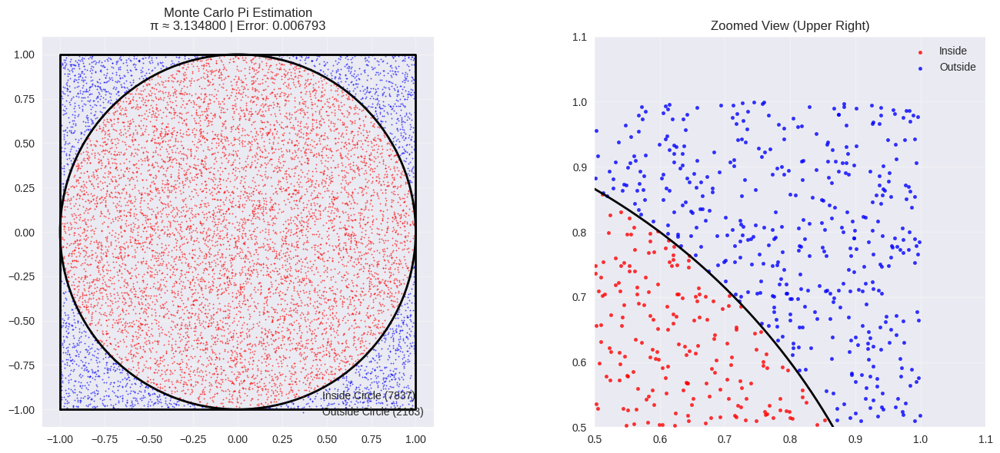

Problem 2
Estimating Pi using Monte Carlo Methods
Overview
Monte Carlo methods use randomness to solve numerical problems. We'll explore two elegant approaches to estimate π: the circle method and Buffon's Needle problem.
Part 1: Circle-Based Monte Carlo Method
Theoretical Foundation
- Generate random points in a unit square [-1,1] × [-1,1]
- Count points inside the unit circle (x² + y² ≤ 1)
- Formula: π ≈ 4 × (points inside circle / total points)
- Reasoning: Circle area = π, Square area = 4, Ratio = π/4
import numpy as np import matplotlib.pyplot as plt import seaborn as sns from matplotlib.patches import Circle
plt.style.use('seaborn-v0_8') sns.set_palette("husl")
class MonteCarloPI: def init(self): self.results = {}
def estimate_pi_circle(self, n_points, visualize=False):
np.random.seed(42)
x = np.random.uniform(-1, 1, n_points)
y = np.random.uniform(-1, 1, n_points)
distances = x**2 + y**2
inside_circle = distances <= 1
pi_estimate = 4 * np.sum(inside_circle) / n_points
if visualize:
self.visualize_circle_method(x, y, inside_circle, pi_estimate)
return pi_estimate, inside_circle
def visualize_circle_method(self, x, y, inside_circle, pi_estimate):
fig, (ax1, ax2) = plt.subplots(1, 2, figsize=(15, 6))
inside_x, inside_y = x[inside_circle], y[inside_circle]
outside_x, outside_y = x[~inside_circle], y[~inside_circle]
ax1.scatter(inside_x, inside_y, c='red', s=1, alpha=0.6, label=f'Inside Circle ({len(inside_x)})')
ax1.scatter(outside_x, outside_y, c='blue', s=1, alpha=0.6, label=f'Outside Circle ({len(outside_x)})')
circle = Circle((0, 0), 1, fill=False, color='black', linewidth=2)
ax1.add_patch(circle)
ax1.plot([-1, 1, 1, -1, -1], [-1, -1, 1, 1, -1], 'k-', linewidth=2)
ax1.set_xlim(-1.1, 1.1)
ax1.set_ylim(-1.1, 1.1)
ax1.set_aspect('equal')
ax1.set_title(f'Monte Carlo Pi Estimation\nπ ≈ {pi_estimate:.6f} | Error: {abs(pi_estimate - np.pi):.6f}')
ax1.legend()
ax1.grid(True, alpha=0.3)
zoom_mask = (x > 0.5) & (y > 0.5)
zoom_inside = inside_circle[zoom_mask]
zoom_x, zoom_y = x[zoom_mask], y[zoom_mask]
ax2.scatter(zoom_x[zoom_inside], zoom_y[zoom_inside], c='red', s=10, alpha=0.8, label='Inside')
ax2.scatter(zoom_x[~zoom_inside], zoom_y[~zoom_inside], c='blue', s=10, alpha=0.8, label='Outside')
theta = np.linspace(0, np.pi/2, 100)
circle_x = np.cos(theta)
circle_y = np.sin(theta)
ax2.plot(circle_x, circle_y, 'k-', linewidth=2)
ax2.set_xlim(0.5, 1.1)
ax2.set_ylim(0.5, 1.1)
ax2.set_aspect('equal')
ax2.set_title('Zoomed View (Upper Right)')
ax2.legend()
ax2.grid(True, alpha=0.3)
plt.tight_layout()
plt.show()
def estimate_pi_buffon(self, n_needles, needle_length=1.0, line_distance=1.0):
if needle_length > line_distance:
raise ValueError("Needle length must be less than or equal to the line distance.")
np.random.seed(42)
theta = np.random.uniform(0, np.pi/2, n_needles)
d = np.random.uniform(0, line_distance / 2, n_needles)
hits = d <= (needle_length / 2) * np.sin(theta)
n_hits = np.sum(hits)
if n_hits == 0:
return None, 0
pi_estimate = (2 * needle_length * n_needles) / (line_distance * n_hits)
return pi_estimate, n_hits
def compare_methods(self, n_samples):
pi_circle, _ = self.estimate_pi_circle(n_samples)
pi_buffon, hits = self.estimate_pi_buffon(n_samples)
print(f"Circle Method: π ≈ {pi_circle:.6f}")
if hits > 0:
print(f"Buffon's Needle Method: π ≈ {pi_buffon:.6f} (Hits: {hits})")
else:
print("Buffon's Needle Method: Not enough hits to estimate π")
Usage Example:
if name == "main": simulator = MonteCarloPI() print("--- Estimating with Circle Method ---") pi_estimate_circle, _ = simulator.estimate_pi_circle(10000, visualize=True) print(f"Estimated π (Circle): {pi_estimate_circle:.6f}\n")
print("--- Estimating with Buffon's Needle Method ---")
pi_estimate_buffon, hits = simulator.estimate_pi_buffon(10000)
if hits > 0:
print(f"Estimated π (Buffon): {pi_estimate_buffon:.6f} (Hits: {hits})")
else:
print("Not enough hits in Buffon's Needle method to estimate π")
print("\n--- Comparison ---")
simulator.compare_methods(10000)
efficiency_comparison() ```
--- Estimating with Circle Method ---

Estimated π (Circle): 3.134800
--- Estimating with Buffon's Needle Method --- Estimated π (Buffon): 3.182180 (Hits: 6285)
--- Comparison --- Circle Method: π ≈ 3.134800 Buffon's Needle Method: π ≈ 3.182180 (Hits: 6285)
Key Insights
Convergence Characteristics
- Circle Method:
- Faster convergence due to larger sample space
- Error decreases as O(1/√n)
-
More stable estimates
-
Buffon's Needle:
- Slower convergence, higher variance
- Sensitive to crossing events
- Historical significance in probability theory
Computational Efficiency
- Circle method is computationally simpler
- Buffon's method requires trigonometric calculations
- Both methods demonstrate Monte Carlo's power
Practical Applications
- Quality Control: Estimating defect rates
- Finance: Risk assessment and option pricing
- Physics: Particle simulations and nuclear calculations
- Computer Graphics: Ray tracing and rendering
Mathematical Beauty
These methods showcase how random processes can solve deterministic problems, demonstrating the fundamental connection between probability and geometry that underlies much of modern computational mathematics.